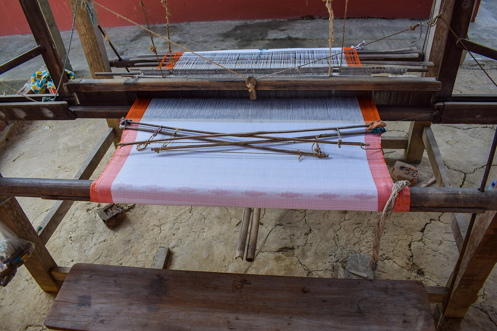
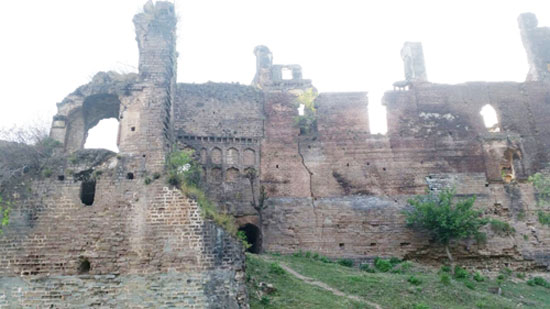
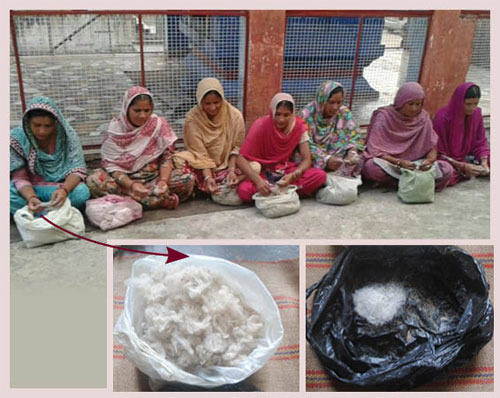
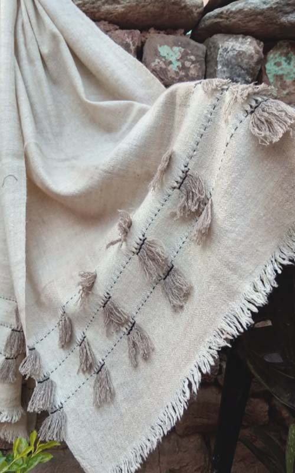
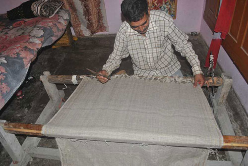
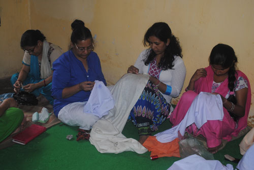

Khaddi is the handloom. We named the cloth after the machine we refused to replace.

A craft that had already died once.
Basohli was founded around 1635 on a branch of the silk route, and its bazaar had shops known for pashmina. Then machine-made “pashmina” arrived — blended with nylon, woven in five minutes, the synthetic washed out with acid. The mill won on price and the looms here stopped.
The trust is not funded by a government or a donor. It runs on what the cloth earns.

Shakti Pathak grew up in Basohli on stories of the palace and its shawls. He could not accept that his own town had lost the thing it was known for.
Two friends went looking with him: Venkata Krishna, an advocate at the Supreme Court of India, and Rajni Sharma, a designer. They found the last people who remembered the old looms, and asked to be taught.
Then they did something nobody had tried. They took the tools of khadi — the hand-spun, hand-woven cotton tradition — and used them on pashmina fibre. They called it Khadi-Pashmina.
Their own money, their own weekends, their own risk. That was 2016.
Shakti Pathak
Grew up in Basohli. Became a senior official with the Government of J&K, and came back for the looms.
Venkata Krishna
Advocate, Supreme Court of India. A working life spent on rights and provenance, now applied to a village craft.
Rajni Sharma
Sat with the weavers, rebuilt the technique, and turned a revival into something people would want to wear.
Raja Bhupat Pal founds Basohli on the right bank of the Ravi.
The bazaar is known for its pashmina. The palace keeps the weavers in work.
The trust sets up the first loom and the first group of spinners.
Twelve spinners, four looms, about forty pieces a month.
If it makes the brand louder and the story less true, we don’t do it.
No power loom, ever. We train more hands instead.
Spinner, weaver, village and date on every piece.
Rates set before margin and published openly.
Organic starch. No carbonising, no acid wash, no nylon.
A week per shawl is why it outlives you.
Watch it being madeThe Basohli Diaries
A town that had forgotten how to make its own cloth.
Hands that remember what books cannot teach.
One episode every two weeks, from the village. Nothing is sold on the channel.

@discoveringrootsEP 01Dehairing by hand. No narration.
@discoveringrootsEP 02Why your €40 pashmina is a lie @discoveringrootsEP 05Nine days to spin one shawl
@discoveringrootsEP 05Nine days to spin one shawl
@discoveringrootsEP 06Six days on loom no. 4 @discoveringrootsEP 08Embroidering a stranger’s name
@discoveringrootsEP 08Embroidering a stranger’s name
@discoveringrootsEP 06Twelve women, one room @discoveringrootsEP 11The first shawls leave for Europe@discoveringrootsEP 01The town that forgot its own cloth@discoveringrootsEP 01Dehairing by hand. No narration.@discoveringrootsEP 02Why your €40 pashmina is a lie@discoveringrootsEP 05Nine days to spin one shawl@discoveringrootsEP 06Six days on loom no. 4@discoveringrootsEP 08Embroidering a stranger’s name@discoveringrootsEP 06Twelve women, one room@discoveringrootsEP 11The first shawls leave for Europe@discoveringrootsEP 01The town that forgot its own cloth
@discoveringrootsEP 11The first shawls leave for Europe@discoveringrootsEP 01The town that forgot its own cloth@discoveringrootsEP 01Dehairing by hand. No narration.@discoveringrootsEP 02Why your €40 pashmina is a lie@discoveringrootsEP 05Nine days to spin one shawl@discoveringrootsEP 06Six days on loom no. 4@discoveringrootsEP 08Embroidering a stranger’s name@discoveringrootsEP 06Twelve women, one room@discoveringrootsEP 11The first shawls leave for Europe@discoveringrootsEP 01The town that forgot its own cloth